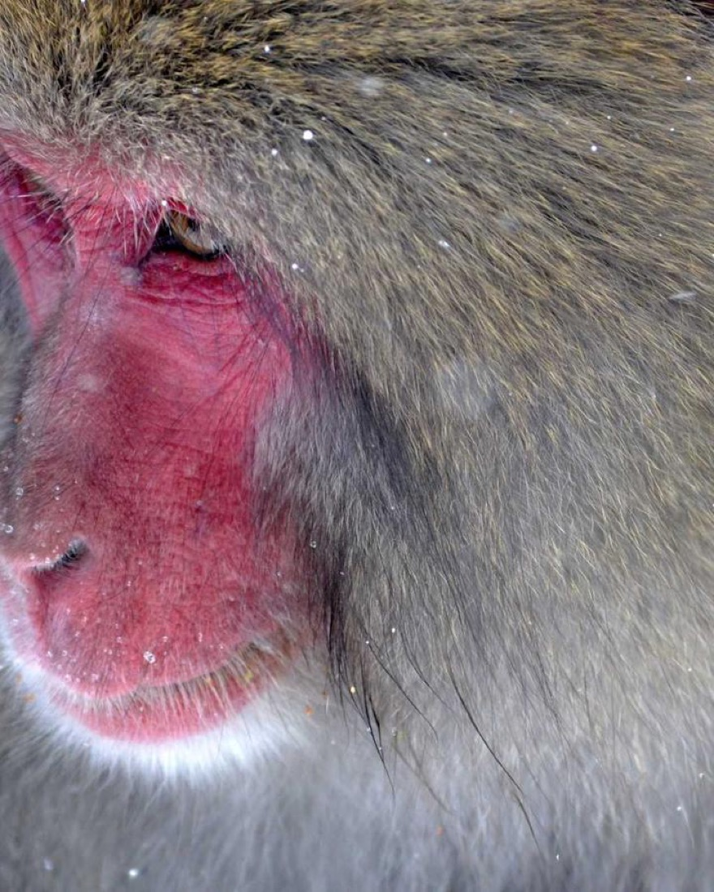

Your First Film: A Five-Minute Setup Guide
From download to invite link, before your coffee goes cold.

The setup screen for your first film asks you four small questions, and you can be done before your coffee goes cold. But each of those questions quietly shapes how the whole experience feels — so here's a walkthrough of what you're actually choosing, and the one or two places it's worth slowing down for.
1. Name the film
It seems trivial. It isn't. The name is the first thing your friends see when they get the invite, and it sets the tone for the entire roll. "Camera Test" gets you camera-test photos. "Sophie's 30th — don't be normal" gets you something else entirely.
The best names do one of two things: they pin the moment ("Lake House, Labor Day") or they set a dare ("The Last Good Night of Summer"). Either way, you're not just labeling a folder — you're telling everyone what kind of night this is supposed to be.
2. Pick a look
This is the choice worth lingering on. The look you pick becomes the camera every guest shoots through, so it defines the feel of every single photo in the roll. A few quick rules of thumb:
- A warm film stock for anything with people and golden light — dinners, weddings, sunsets. It flatters skin and makes string lights glow.
- A classic disposable for parties and nights out. It's punchy, a little chaotic, and forgiving of bad lighting.
- Black and white when you want the roll to feel timeless and a touch serious — reunions, big milestones, anything you suspect you'll care about in twenty years.
- Super 8 or instant when the mood is dreamy and you want the photos to feel like a memory the moment they're taken.
You're not locked into a mood forever — your next film can be a different camera entirely. But within one roll, one look keeps everything coherent, which is a huge part of why the results feel intentional instead of like a random camera dump.
3. Set the reveal
Here's where Filmsera does the thing other cameras don't: you decide when everyone gets to see the photos. Nobody — including you — sees a frame until the film develops at the time you set.
The right answer depends entirely on the occasion:
- Ten minutes turns it into a live party game — shoot now, gather round and laugh in real time.
- The next morning is the sweet spot for most events. You stay present all night and wake up to the whole thing.
- A week is for trips and big milestones, when you want the anticipation to stretch and the photos to land like a small gift after the fact.
When in doubt, pick "next morning." It's the most universally satisfying version of the wait.
4. Share one link
The last step is the easiest. You get a single link (and a code, and a QR if you want it). Anyone you send it to joins the same film and starts shooting into the same roll — no account hoops, no friction. Drop it in the group chat, text it to the table, or print the QR on a card if it's a bigger event.
A few first-film mistakes to skip
Almost everyone makes the same handful of small errors on their first film, and all of them are easy to dodge if someone tells you in advance. None are fatal — but skipping them makes your first roll land much better.
- Don't reveal too soon. The temptation on film one is to set a ten-minute reveal so you can see if it "works." Resist it. The wait is the whole experience; collapse it and you've just made an ordinary camera. Set the next morning and trust the process.
- Don't pick your wildest look first. A heavy VHS or a hard cinema-bar look is fun, but for your debut it can overwhelm the photos and make the whole roll feel gimmicky. Start with a warm, flattering stock — you'll like the results more and so will everyone you invited.
- Don't forget to share the link early. The single biggest reason a first film comes back half-empty is that the host shared the link too late, after the good moments had already passed. Send it before anyone sits down.
- Don't go unlimited by default. An unlimited roll sounds generous but quietly removes the thing that makes each shot count. A cap of 24 or 36 makes people more deliberate and the finished roll more satisfying.
The thread running through all four: the constraints are features, not limitations. Every instinct that says "make it easier, faster, bigger" is working against the experience. Lean into the wait and the limit, and your first film will be the one that hooks you.
Keep it tiny. Make a film for your next dinner with two or three friends. Name it for the night, pick one warm look, set the reveal for the next morning, and send the link before anyone sits down. By breakfast you'll have a small, beautiful roll — and you'll immediately understand why the wait is the best part.
That's the whole thing
Name, look, reveal, link. Four choices, five minutes, and you've set up something that feels less like opening a camera app and more like starting a little shared ritual. The first film is always a warm-up — but it's usually the one that convinces people to make the next ten.
Written by the Filmsera team
Filmsera is a shared disposable camera app for iPhone: create a film for your event, let every guest shoot through 25 film looks, and open the whole roll together at the reveal. Download on the App Store →